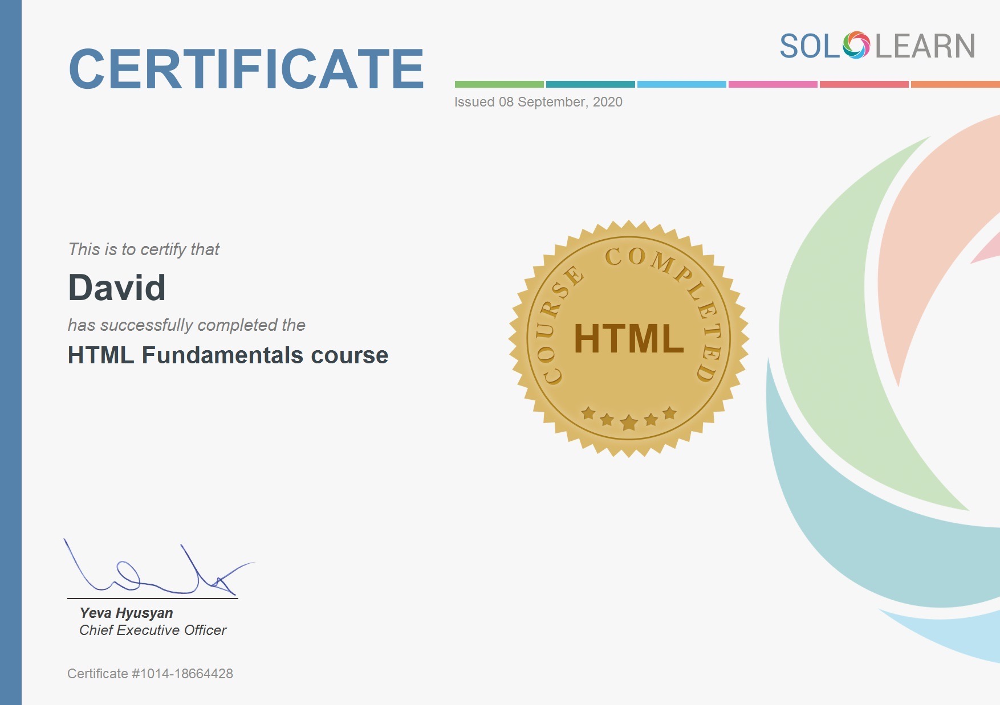

- David K. Future
- 5 Decades on earth
- Elon Musk believer
- Individual investor
- Motto: Enrich, Get Better
December 2019
- Got interested in Arduino (software platform for robotics) YouTube videos
- Decided to buy Arduino Uno pack (controllers) starter
January 2020
- Thinking of doing video editing while learning how to program the Arduino
- Learning from YouTube how to put together a desktop computer from scratch
- Bought a set of computer instead
- Ordered Arduino arrived but not opened yet because trying to figure out how to edit video using uploaded video editing software DaVinci Resolve
February 2020
- Covid starts to creep into the scene
- I let my childrens use the new computer for gaming (happy campers)
- I takeover from my 2nd year HS student the 2017 MacAir
- Learning how to use my MacAir
- Following YouTube tutorials from Arduino (McWhorter), repeated episode 1 to 20 at least twice and replayed episode i'm interested, nothing sticks
March 2020
- Give up Ardunio because according to my research it is very difficult to learn programming by starting to learn C++ program, the underlying programming software of Arduino
April 2020
- Decided to learn Python instead because of CleverQazi (sample) videos
- On it for the most part of Apr 2020, borrow ebooks from online library
- Nothing sticks
- Came across HTML and CSS as path to web development and watch a bunch of tutorial about which are the best programming language
May 2020
- Decided to start on the path of Web Development (front end)
- Covid intensifies
- Bought a domain (onqfam.com) name and a website host (BlueHost)
- Takes 2 weeks to scour the internet on how to deploy the website I created with HTML before being successful
- Done HTML at CodeCademy on the free access
June 2020
- Start to learn CSS
- On 9 Jun 2020, decided to use Pomodoro technique (here) learning, recorded each 20 to 30min of learning by an entry of star in my diary
- On 27 Jun 2020 decided to subscribe monthly to CodeCademy
- Start again with HTML as part of the Web Development path that i decide to take
July 2020
- Continue with CSS, done and;
- On 24 Jul 2020 start JavaScript (JS) at CodeCademy
- While having tutorial in Codecademy, only learned how to use copy and paste at MacAir (the keyboard shortcut) to copy and paste to the IDE of CodeCademy, which is really telling something of my computer literacy
August 2020
- Done JS on 26 Aug and decided to pause Codecademy Subscription (US$19.99) but plan to comeback in 1 month's time
- Spent the last week of the month rethinking how to proceed
- Enroll in UDEMY JavaScript Essential free tutotial by Lawrence Turton (6hrs)
September 2020
- Decided to do project as the path to learning until end of the month
- Look for literature and ideas from twitter as I followed a lot of accounts in coding
- Start with JavaScript30 by Wes Bos, spent 2 days and no more. I find it hard to learn, which i attibute to me not learning that much from the recently completed JS tutorial from Codecademy
- Finished HTML course at Sololearn mobile app
- Finished CSS course at Sololearn mobile app
- Daily practice at new mobile app MIMO
- Upload to new website "Netilfy"
- Found at Twitter that there are at least another 10 sites that you can deploy website for free, deployed to GitHub pages
- All this time learn to drink coffee without sugar; which result in having my weight drop from 78kg to 72kg
- Done my niece's food online ordering business
"Cassie's"
- Also started my Elon Musk Blog Page
Elon Musk
- Completed Java Script course at Sololearn app
October 2020
November 2020
